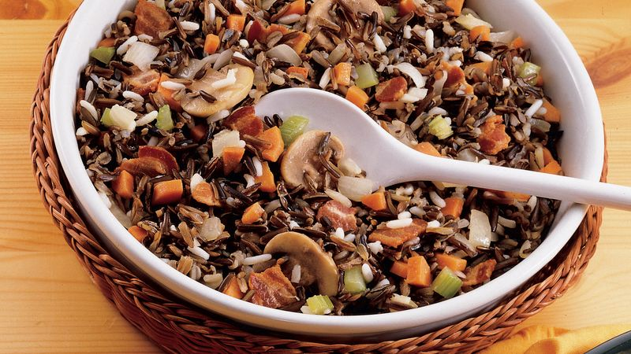

Wild Rice Casserole

Wild rice, eggplant, zucchini and tomatoes smothered in cheese and baked into a vegetarian casserole.
Ingredients
- 3/4 cup uncooked wild rice
- 1 tablespoon & 1 teaspoon olive oil
- 2 cloves garlic
- 4 ounces onion
- 4 ounces zucchini
- 8 ounces eggplant
- 1 cup canned, diced tomatoes, drained
- 1 dash basil
- 1 dash pepper
- 1 cup grated Monterey Jack cheese
- 1 cup grated Parmesan cheese
Steps
- Fill a large saucepan with water and heat on high until boiling.
- Add rice to boiling water, reduce heat to medium and continue to boil gently until some of the kernels begin to burst from their shells (about 30 minutes.) Do not overcook.
- When rice has cooked for 20 minutes, dice onion and garlic.
- Heat oil in a skillet over medium heat and cook onion and garlic until lightly brown (about two minutes).
- While onion and garlic brown, dice eggplant and zucchini. Add to skillet and continue cooking for an additional two minutes.
- Add drained, diced tomatoes, basil and pepper to skillet. Turn heat to low and simmer while rice cooks. Stir occasionally.
- Preheat oven to 350 degrees.
- Drain rice and place in an oven-proof baking dish.
- Pour vegetables over rice and top with grated cheeses.
- Place in hot oven and bake until cheese has melted and lightly browned (about 20 minutes).